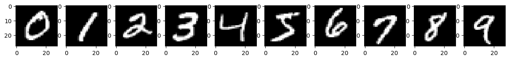
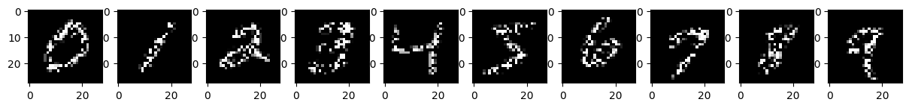
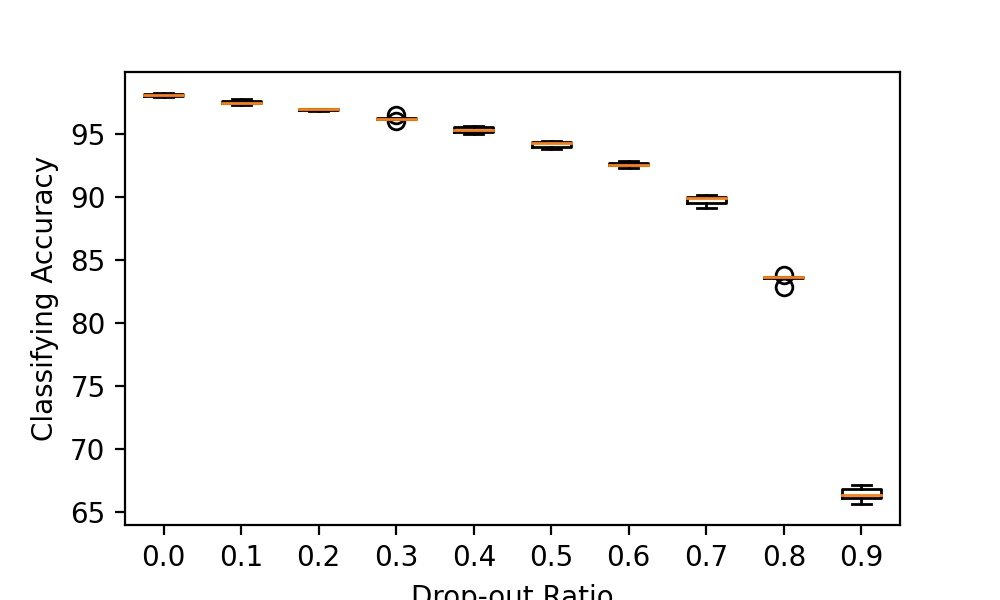

{kind=link}
Copyright 2019 Reflux Design
About Me
I graduated in both Electrical Engineering and Computer Science B.S. at UW-Madison in 2020 Spring. Then in 2020 Fall, I started to pursuit ECE Ph.D. degree advised by Professor Daniel Pimentel-Alarcón . My interests include machine learning, signal processing, deep learning, and optimization. I am actively searching for a internship opportunity. I am currently interested in causal inference because it is a great tool to analyze the effect of random allocation of units. With some raw clinical data in hand, the simple comparison of average scores between groups may not reveal an unbiased estimate of the treatment effect. That's where Causal Inference comes handy, because it is a combination of logical arguments and statistical methods.
EnerHack 2018 1st Place
Winner of Faith Technologies Social Impact Prize. Implemented on Amazon Web Services(AWS) in Python, it helps save energy daily wasted at home by monitoring and controlling the electrical devices, sending warning for potential energy wasting activities, asking permission to shut down the light, and reporting the energy usage.
MadHacks 2018 2nd Prize
Powered by Diagflow and Google Assistant, Voicoder takes your voice instructions and simulates them like running lines of executable code. It was designed mainly for 2 reasons. First, people with typing disabilities could code with voice interactions. Second, It would be more intereting and attractive for children to learn basic coding by talking to the Google Assistant.

Causal Inference Project
Introduction
In this project, we want to know the causal effect of dropping out values from the input of the Deep Learning Neural Network.
In particular, we are interested in a multi-layer feed-forward classifier, which takes the input of an vector and generate the probability of the input catagorized in a sepecific type.
During the training of the Neural Network, there are two places where we can randomly dropping out values in order to make the model more robust to the real-world input and noise.
First, people use drop-out layers to regularize and avoid overfitting. This can be considered the same technique as the Ridge Regression, where the norm of the weight is also limited.
Second, dropping out values from the input starts to receive more attentions as the semi-supervised learning is studied. This is what I am interested for this project.
We want to use causal inference to analyze what is the effect of randomly dropping out values from the input of DNN.
This could be helpful to application of DNNs in the real world, because there is a growing concern among the public that Neural Network need to explain how it is able to make decisions. Especially when it comes to
Deep learning ethnic topic, neural network need to be trustworthy if people could understand the reason behind its decisions. Besides, knowing the causal effect of dropping values would accelerate the training efficiency and robustness of the DNN.

Model
Specifically, we use MNIST as our experimental dataset, which contains images of handwritten figures from 0 to 9. To input the data into the network, the image matrices are vectorized before feed into the network. There will be 10 final nodes each indicate the probability of the input is a certain figure class. To study the effect of missing values, we divide the image into several sub-area with the same size. We randomly delete the values from one sub-area for each trial of the experiment. Then comparing the classification accuracy.
For sub-area, we would like to use one random Bernolli variable for each pixel. The value of the random Bernolli variable will decide whether this pixel is deleted or not. The treatment effect will be determined by the prediction loss, which is the 2-norm between the predicted and true lable. The working hypotheses for this problem is that the DAG should strictly follow the structure of the DNN, that means that every nueron will form a node and every connection between two neuron will form a path in our DAG (refer the following graph).

Assumption
Before the experiment, there are several assumptions that need to be made in order to a causal estimand. For each Bernolli variable, we assume that when applying random value deletion, the probability must be kept between 0 and 1. That is, 0 < P(x) < 1. In addition, we assume the exchangability, that is assuming that the potential outcomes are independent from the treatment assignment. Furthermore, we also assumes consistancy with SUTVA to ensure that potential outcomes are well-defined.
We also assume markov campatibility and causal irrelevance for the following identification proof.
In this experiment, our intervention (denote l) is on the picture input of the network. For the second layer, each node will be a function of l (denote as X^1_i(l)). Similarly, for the third layer, each node will be denoted as X^2_i(l). And finally for the output layer, the node will be denoted as y(l). With this notation in mind, we want to identify: E[Y(l) | X^1(l) = x].
Identification
By Consistancy, E[Y(l) | X^1(l) = x] = E[Y(l,x) | X^1(l) = x].
By Markov compatibility, we know that Y(l,x) is independent of X(l), thus
E[Y(l) | X^1(l) = x] = E[Y(l,x)].
With this in mind, by causal irrelevance, E[Y(l,x)] = E[Y(x)].
By Markov compatibility,
E[Y(x)] = E[Y(x) | X^1 = x].
Finally with consistancy,
E[Y(x) | X^1 = x] = E[Y|X^1 = x].
With the identification proof, what we conclude is that E[Y(l) | X^1(l) = x] = E[Y|X^1 = x]. That means we dropped the dependence on the random variable l to find the expectation of our target identification. This enables us to calculate this term with our experimental results in the following project.
Dataset
Before introducing the algorithm, we first introduce the dataset we used. MNIST is a dataset contains handwritten figures jointly collected by NYU, Google, and facebook researchers. It contians over 60k training samples and more than 10k testing examples. All the images in the dataset were pre-processed for better training efficency. Specifically, all images have been cropped into 28*28 squares. All the figures are centered and resized to fit the window. Some examples are plotted down below.

Algorithm
The algorithms we are using is an outcome regression with the help of deep learning, specifically 3 layers of feedforward neural network. The implementation of this project relies on the Neural Network buildup. Specifically, we build a neural network that has three layers of feedforward layers. The first layer has 1000 activation neurons, the second layer has 100 neurons, and finally the third layer has 10 neurons. For each neuron, we pick rectified linear unit (ReLU) as our activation function. That is being sad, the output after each neuron is:
x_new = max(0, w^T * x).
Training data
Since each sample of the data is a picture of 28*28 pixels containing one hand-written figures, and our network only takes vector as input, we have to transform the picture into a vector. Thus,Before feeding the data into the network, we would vectorize the 28*28 image into a 784 vector. After that, we need to normalize the vector from 0-255(unsigned integers) to 0-1(float) for better training efficiency. In this experiment, we want to test out the causal effect of missing input entries to the output prediction. Thus, to simulate the input dropping out effect, we randomly select some pixels in each picture and set it to 0, such that it won't contribute to any decision made inside the network. The drop-out results are showed below with 10 examples, where the black pixels represent zero values and while pixels represents non-zero values (up to 1).


For the output labels, each image correspoinds to one lable from 0-9 indicating which handwritten figure it is. But in order to have the neural network learn the probability distribution, we have to one-hot encode the output labels. For example, if the label is 2, then the correspoinding one-hot code should be [0,0,1,0,0,0,0,0,0,0]. The one-hot encodings show that the probability of this image being "2" is 100%.
Training Methodology
After three layers of activation, we use softmax function to further convert the output into probability distribution. To make the model assessment more robust, we use k-fold cross validation method to determine the average accuracy. Specifically, we divide the training dataset to k subgroups. We first training the neural network with any k-1 subgroups and then evaluate the accuracy using the left out subgroup. We repeat this process for all k combinations and take the average accuracy as the final result.

Result
We first measure classifying accuracy vs the drop-out ratio. The result of 5-fold cross validation is shown in the graph below. We can clearly see an accuracy decay with the increase of the drop-out ratio. In summary, we solidify our hypotheses, that is having drop-out values in the input of the data would affact the performance of deep learning neural network model. Furthermore, we discovered that the accuracy over the drop-out ratio has a exponential decay.
